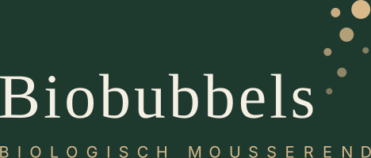

Onze website bruist bijna.
We zijn hard aan het werk om iets moois voor je klaar te zetten.
Kom binnenkort terug, of mail ons op info@biobubbels.nl

We zijn hard aan het werk om iets moois voor je klaar te zetten.
Kom binnenkort terug, of mail ons op info@biobubbels.nl